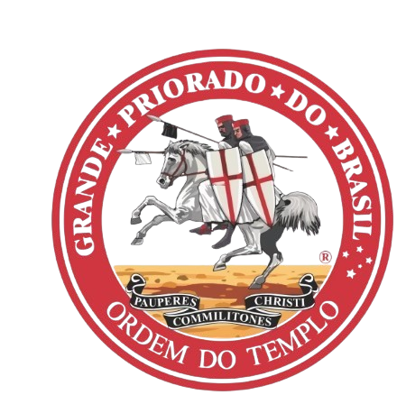
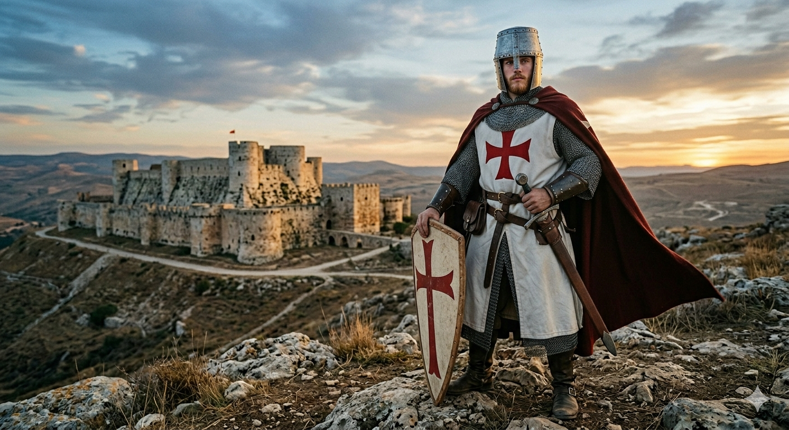

01
Disciplina
A força do cavaleiro não reside na espada, mas no domínio constante sobre sua própria vontade.

Os Cavaleiros Templários foram uma ordem militar cristã fundada no século XII para proteger peregrinos na Terra Santa. Com o tempo, tornaram-se uma das instituições mais poderosas e ricas da Idade Média, criando sistemas bancários primitivos. Sua influência gerou desconfiança em monarcas, levando à sua dissolução dramática e perseguição no início do século XIV. Até hoje, a ordem é cercada por lendas sobre tesouros escondidos e mistérios históricos.

A verdadeira transformaçao reside em transmutar a dificuldade em Luz.
A força do cavaleiro não reside na espada, mas no domínio constante sobre sua própria vontade.
Renunciar aos bens terrenos é o caminho para encontrar a verdadeira riqueza no serviço e no propósito.
A união do grupo depende da humildade de seguir as regras que guiam o bem comum acima do eu.
A sega de um homem em busca de sua missão no plano da Terra.
O início da jornada acontece no campo, onde o cultivo da cevada depende de planejamento, clima favorável e cuidado com os recursos naturais.
Pequenos fatos que ajudarm a entender a saga dos Cavaleiros Templários.
A vida de um templário era guiada por 72 regras estritas que ditavam desde o modo de comer até o silêncio absoluto durante as refeições.
Uma forma leve de revisar os principais conceitos apresentados no projeto.
Conheça a ascensão, os segredos e o legado da ordem que moldou o destino da cristandade na Idade Média.
A força dos Templários não residia apenas em suas espadas, mas na obediência absoluta à Regra Latina, que transformava homens comuns em uma unidade militar inquebrável.
Guiados pelo voto de pobreza, os cavaleiros renunciavam a todas as posses materiais, dedicando suas vidas e seu sangue inteiramente à proteção dos peregrinos e da Terra Santa.
Muito além das batalhas, a Ordem revolucionou a economia medieval ao criar um sistema bancário pioneiro que permitia o comércio seguro entre diferentes continentes.
Um complemento visual para aprofundar a compreensão do tema e enriquecer a apresentação do projeto.
Uma experiência complementar para apresentar o conteúdo de forma criativa e envolvente.